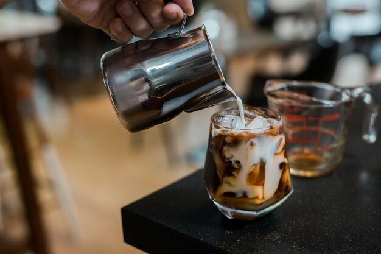

Choosing a coffee is easier when you begin with the flavours and textures you enjoy, rather than trying to guess which drink is “best”. At Kindred Grounds, consider how strong you like your coffee, whether you prefer it black or with milk, and whether you want something familiar or a little different. If you’re unsure what’s available, ask the team to guide you through the current options.
Think about the coffees you’ve enjoyed before. If you like a smooth, rounded taste, mention that when ordering. If you prefer a brighter or more pronounced flavour, say so. The staff can explain the character of the coffees available and help you choose one that suits your preferences.
You can also describe what you want in everyday terms: gentle, rich, bold, or balanced. You don’t need specialist vocabulary to get a useful recommendation.
The brewing method affects both the taste and texture of a coffee. An espresso-based drink may suit you if you enjoy a concentrated coffee, either on its own or combined with milk. A brewed coffee can be a good choice when you’d like to focus on the coffee’s flavour without the same intensity as a small espresso.
If you usually order a familiar drink, use it as a starting point. For example, ask how the available options compare with your usual choice, or whether a coffee would work well with milk. The menu and preparation options can vary, so check what Kindred Grounds is serving when you visit.
Milk can soften coffee’s intensity and add a creamy texture. If you prefer a stronger coffee taste, you might choose less milk or ask for a drink with a more pronounced coffee flavour. If you like a sweeter drink, ask what additions are available rather than assuming they are included.
If you have a dietary preference or need an alternative to dairy, ask which options are offered. Availability can vary, and the team can confirm what is suitable for your order.
Consider when you’re having your coffee and how much caffeine you want. If you’re avoiding caffeine or would prefer less, ask whether a decaffeinated option is available. You can also ask about drink sizes if you’re deciding between a quick cup and something to enjoy over a longer break.
A simple question can make choosing easier: “I usually like a smooth coffee with milk—what would you recommend?” You can also ask how a particular coffee is prepared or what it tastes like. Sharing what you enjoy gives the team a useful starting point and helps you find a coffee that feels right for you.
This notice is a brief introduction and is not a complete privacy policy. Before collecting personal information, Kindred Grounds should publish a full policy explaining what information is collected, why it is used, how long it is kept, whether it is shared, and how visitors can exercise their rights. Please review the complete policy before submitting personal details. Read the Privacy Policy